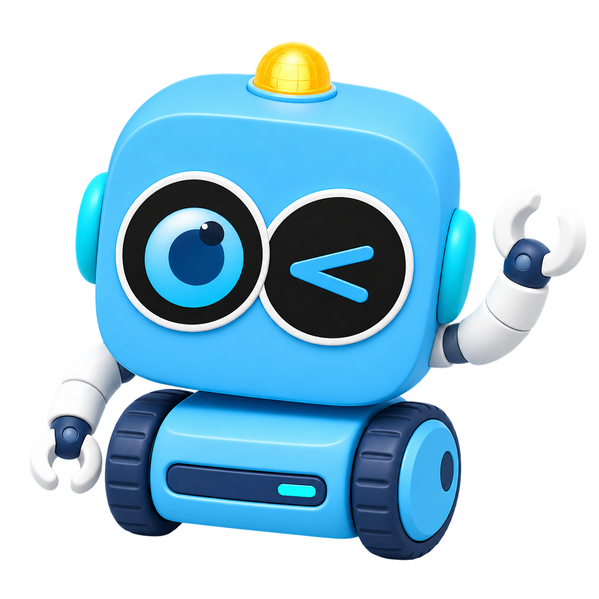

GÊNEROS TEXTUAIS
TEXTO 1 0 ACERTOS
CARREGANDO TEXTO…
QUE TIPO DE TEXTO É ESTE?

LEIA E ESCOLHA.
VOCÊ TEM DUAS TENTATIVAS.
PRÓXIMO TEXTO EM 5 S…

TEXTO 1 0 ACERTOS
CARREGANDO TEXTO…

VOCÊ TEM DUAS TENTATIVAS.
PRÓXIMO TEXTO EM 5 S…